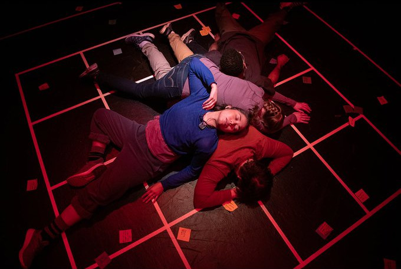
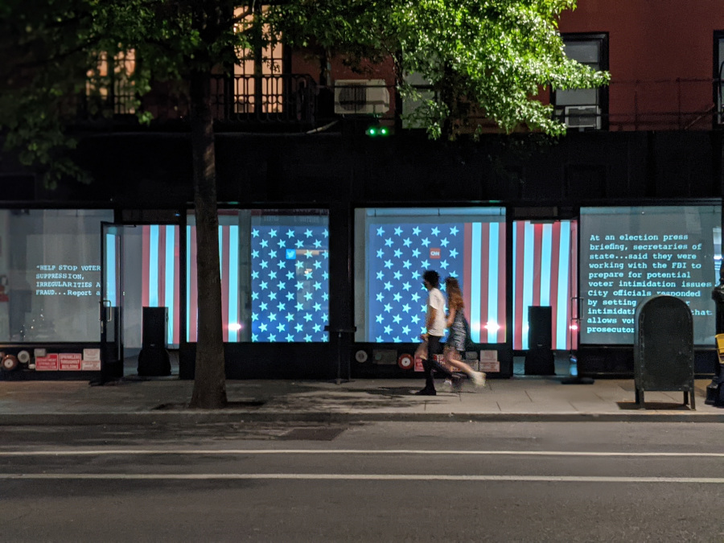
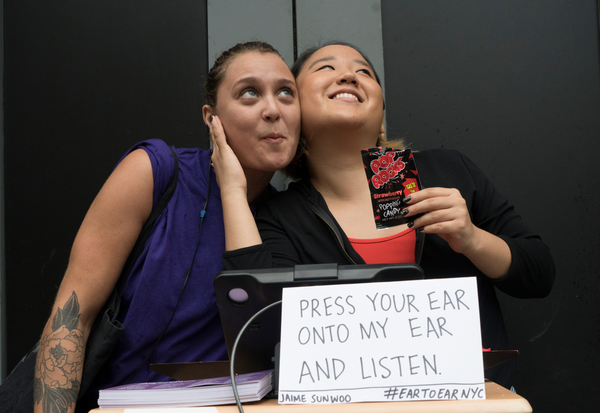
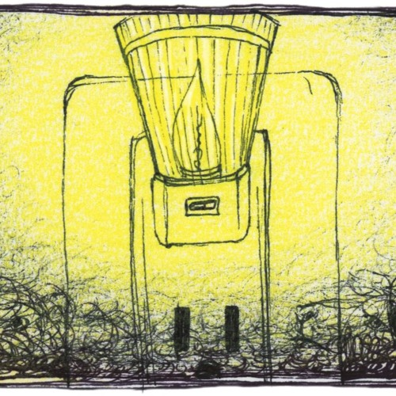

Specially Processed American Me
A surreal autobiographical performance using SPAM, the canned meat, as a portal into Jaime Sunwoo's Asian American upbringing and her family's experiences of the Korean War.
Embodied
Performers repeat text verbatim as they listen to remixed audio tracks of fifty-five interviewees all responding to a single prompt: “Describe a time you were acutely aware of your race.”
You Are The News Now
Through parallel monologues sourced entirely from found text, this multimedia installation reports on the Covid-19 crisis through the lens of mainstream news media outlets and QAnon conspiracy theorists.

reGENEration lab
A gene modification clinic that promises to transform patients into their ideal selves.
Ear to Ear
With ears pressed together, people listen to each other's inner sounds while taking turns eating different textured foods.

Earshot
An interactive radio play in New York City bars.

Household
The story of a dysfunctional family of household objects– Blender, Vacuum, Lamp, Curtain, and Mirror.

The Creature
The Creature leaves the comfort of its rainbow fungal abode to spread its colorful spores onto the sterile spaces we all inhabit.
Safety Net
An autobiographical audio story about Jaime Sunwoo's childhood fear of sleeping alone.